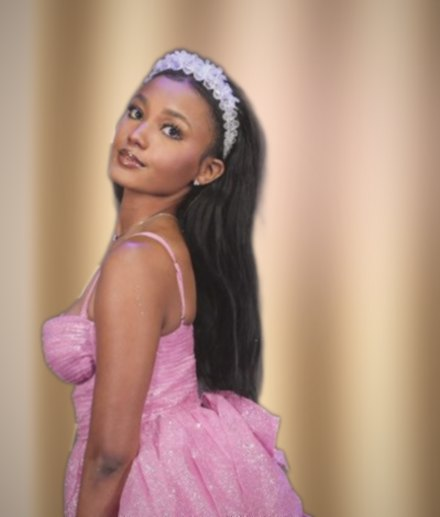

Chapter the FirstIn Which a Ward Is Taken
All across medieval Europe, a young person without the right backing could be taken in as a ward. A lord brought them into his household, gave them a seat at his table, and taught them what they would need: how to carry themselves, how to work, how to stand up for what's right. In return the ward gave loyalty for life.
Chapter the SecondIn Which a Charity Girl Is Rescued
Georgette Heyer knew the custom too. In Charity Girl, Viscount Desford meets Cherry Steane, a girl kept as a poor relation and treated as one. When he finds her running away to London with almost nothing, he takes her under his protection and refuses to rest until she has a proper home.
Chapter the ThirdIn Which I Say Thank You
Brad, you are my Desford. You took me in when you didn't have to, showed me the ropes, and made me feel like I belonged at the table. I'm your ward for life, and grateful for it every day.
Thank you for everything, Brad.
With gratitude and loyalty,Your Ward
P.S. In every good Regency novel, a proper guardian also arranges introductions. So if you happen to know a homie worth meeting, please drop me off with him. *cough cough*
A Regency Tale of Wardship

Charity Girl
or, How a Good Friend Took In a Ward